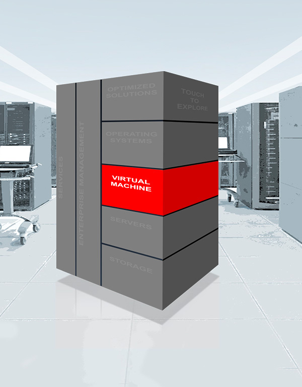

ORACLE VIRTUALIZATION
Benefits
Virtualization started as a means of server consolidation, but that changed as IT evolved into a service provider. An isolated hypervisor cannot provide the speed and time-to-market required to deploy a complete application stack. To realize the full benefits of virtualization, organizations must look beyond simple consolidation and choose application-driven virtualization solutions that are integrated with the applications and infrastructure.
Highlights
Only Oracle offers the industry’s most complete and integrated virtualization, from the desktop to the data center. Going far beyond simple consolidation, Oracle enables you to virtualize and manage your full hardware and software stack.